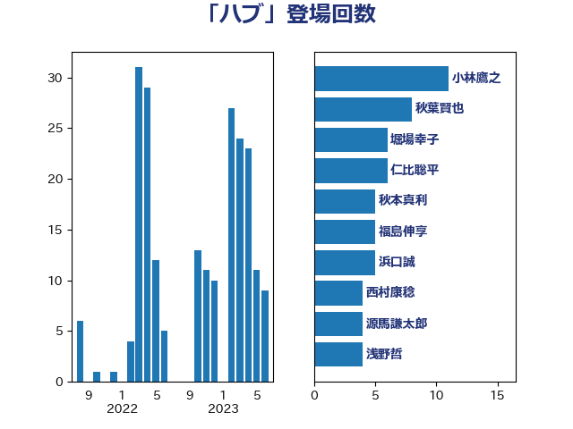

単語「ハブ」

| 小林鷹之 | 自由民主党 | 11 回 |
| 秋葉賢也 | 自由民主党 | 8 回 |
| 堀場幸子 | 日本維新の会 | 6 回 |
| 仁比聡平 | 日本共産党 | 6 回 |
| 秋本真利 | 無所属 | 5 回 |
| 福島伸享 | 無所属 | 5 回 |
| 浜口誠 | 国民民主党 | 5 回 |
| 西村康稔 | 自由民主党 | 4 回 |
| 源馬謙太郎 | 立憲民主党 | 4 回 |
| 浅野哲 | 国民民主党 | 4 回 |
| 末松信介 | 自由民主党 | 4 回 |
| 後藤祐一 | 立憲民主党 | 4 回 |
| 佐藤正久 | 自由民主党 | 4 回 |
| 河野太郎 | 自由民主党 | 3 回 |
| 林芳正 | 自由民主党 | 3 回 |
| 本庄知史 | 立憲民主党 | 3 回 |
| 山田美樹 | 自由民主党 | 3 回 |
| 鈴木敦 | 国民民主党 | 2 回 |
| 野村哲郎 | 自由民主党 | 2 回 |
| 芳賀道也 | 国民民主党 | 2 回 |
| 田村智子 | 日本共産党 | 2 回 |
| 漆間譲司 | 日本維新の会 | 2 回 |
| 湯原俊二 | 立憲民主党 | 2 回 |
| 比嘉奈津美 | 自由民主党 | 2 回 |
| 柴田巧 | 日本維新の会 | 2 回 |
| 松川るい | 自由民主党 | 2 回 |
| 東徹 | 日本維新の会 | 2 回 |
| 小熊慎司 | 立憲民主党 | 2 回 |
| 国光あやの | 自由民主党 | 2 回 |
| 加藤勝信 | 自由民主党 | 2 回 |
| 井上貴博 | 自由民主党 | 2 回 |
| 黄川田仁志 | 自由民主党 | 1 回 |
| 高橋はるみ | 自由民主党 | 1 回 |
| 阿部司 | 日本維新の会 | 1 回 |
| 鈴木俊一 | 自由民主党 | 1 回 |
| 足立敏之 | 自由民主党 | 1 回 |
| 谷田川元 | 立憲民主党 | 1 回 |
| 萩生田光一 | 自由民主党 | 1 回 |
| 若松謙維 | 公明党 | 1 回 |
| 自見はなこ | 自由民主党 | 1 回 |
| 篠原孝 | 立憲民主党 | 1 回 |
| 石川博崇 | 公明党 | 1 回 |
| 石垣のりこ | 立憲民主党 | 1 回 |
| 石井浩郎 | 自由民主党 | 1 回 |
| 田村貴昭 | 日本共産党 | 1 回 |
| 田村まみ | 国民民主党 | 1 回 |
| 玉木雄一郎 | 国民民主党 | 1 回 |
| 牧山ひろえ | 立憲民主党 | 1 回 |
| 片山さつき | 自由民主党 | 1 回 |
| 瀬戸隆一 | 自由民主党 | 1 回 |
| 池畑浩太朗 | 日本維新の会 | 1 回 |
| 櫻井周 | 立憲民主党 | 1 回 |
| 柴愼一 | 立憲民主党 | 1 回 |
| 本田顕子 | 自由民主党 | 1 回 |
| 新妻秀規 | 公明党 | 1 回 |
| 新垣邦男 | 立憲民主党 | 1 回 |
| 後藤茂之 | 自由民主党 | 1 回 |
| 平林晃 | 公明党 | 1 回 |
| 岸田文雄 | 自由民主党 | 1 回 |
| 尾崎正直 | 自由民主党 | 1 回 |
| 小沢雅仁 | 立憲民主党 | 1 回 |
| 小倉將信 | 自由民主党 | 1 回 |
| 吉良州司 | 無所属 | 1 回 |
| 吉川沙織 | 立憲民主党 | 1 回 |
| 吉川ゆうみ | 自由民主党 | 1 回 |
| 伊藤渉 | 公明党 | 1 回 |
| 上野通子 | 自由民主党 | 1 回 |
| 三反園訓 | 無所属 | 1 回 |